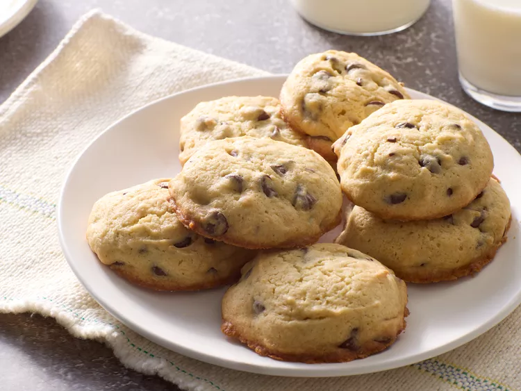

Grandmas Banana Chocolate Chip Cookies

This is an placeholder image until we make them again.
Description
These are delicious banana chocolate chip cookies that my grandmother used to make for me as a kid. They are soft cookies and addicting!
Ingredients
- 2 1/4 cup of flour
- 1/2 teaspoon of salt
- 1/4 teaspoon of ground cloves
- 1/2 teaspoon of nutmeg
- 1 teaspoon of cinnamon
- 1 stick of margarine/butter, melted until soft
- 1/2 cup of sugar
- 1 egg
- 1 cup of mashed banana
- 1 teaspoon of baking soda
- 1 teaspoon of vinegar
- 1/2 cup of semi sweet chocolate chips
- 1 teaspoon of vanilla
Steps
- Mix flour, salt, cloves, nutmeg and cinnamon in a bowl and set aside.
- Mix the melted margarine/butter, sugar, egg and banana in a new bowl.
- In the wet bowl add baking soda and vinigar which will cause it to fizz. Add vanilla and chocolate chips.
- Pour the dry mixture bowl into the wet mixture bowl and mix together.
- Spoon out dollaps of the cookie dough onto a well greased cookie sheet. Bake at 350 for 10-12 mins